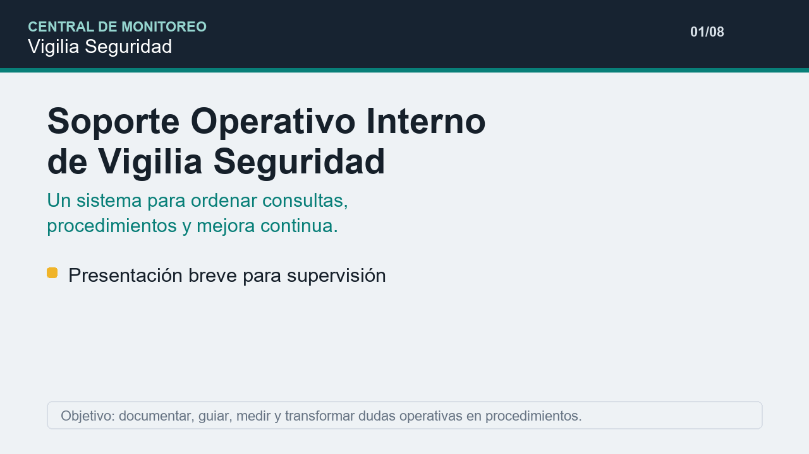

Recurso informativo
Video presentación del sistema
Resumen breve para explicar a supervisión qué hace el Soporte Operativo Interno, qué problema resuelve y cómo convierte dudas operativas en procedimientos reutilizables.

Central de Monitoreo
Manual de uso
Este sistema ordena la atención operativa, reduce dudas repetidas y convierte cada evento irregular en conocimiento reutilizable. Su objetivo es que el operador tenga una guía rápida para actuar, registrar, derivar y aprender sin depender siempre de instrucciones sueltas por WhatsApp, mail o memoria.
Recurso informativo
Resumen breve para explicar a supervisión qué hace el Soporte Operativo Interno, qué problema resuelve y cómo convierte dudas operativas en procedimientos reutilizables.

Objetivo
Centraliza procedimientos, directivas, eventos en espera, tareas y métricas para que la Central de Monitoreo trabaje con criterios claros, medibles y mejorables.
Uso diario
Secciones
Roles
Permisos
Alta de usuarios
La planilla de base está en usuarios_vigilia_firebase.csv. Las contraseñas son temporales y conviene cambiarlas cuando el sistema pase a uso real.
Trazabilidad
El sistema no reemplaza ATCL, WhatsApp ni el mail. Su función es centralizar el seguimiento: cada pedido del cliente queda registrado, asignado a un área responsable, medido por fecha y estado, y cerrado con observación o evidencia para que no dependa de pedidos verbales o memoria.
Mejora continua
Cuando un operador encuentra un evento que no puede cedular con seguridad, lo carga en Aprendizajes con abonado, falla, duda concreta y contexto. El sistema sugiere una posible solución, permite copiar una nota estandarizada para supervisión y guarda el caso. Luego, el supervisor valida el criterio correcto y esa respuesta queda asentada como procedimiento reutilizable para otros operadores.
Mejora continua
Las ideas de mejora no deberían perderse en comentarios sueltos. En Sugerencias, cada operador puede registrar un aporte con sector, tipo, impacto y beneficio esperado. Las propuestas quedan visibles para revisión, pueden copiarse como nota formal o enviarse al Kanban para seguimiento.
Guion breve para video
Soporte Operativo Interno de Vigilia Seguridad es un sistema interno creado para acompañar al operador en la Central de Monitoreo.
Su objetivo es reducir dudas, ordenar procedimientos y transformar cada evento irregular en conocimiento reutilizable.
El operador ingresa una consulta o llamada, el sistema sugiere el sector correspondiente, muestra preguntas guía y orienta la acción inicial.
Si el caso pertenece a Objetivo Fijo 911, SAFE, supervisión o servicio técnico, el sistema permite avanzar hacia la sección correcta y consultar el procedimiento.
Cuando aparece una duda que no se puede resolver en el momento, se registra en Aprendizajes. Luego, supervisión valida el criterio correcto y esa respuesta queda disponible para futuros casos.
Además, el tablero Kanban y las métricas permiten medir eventos, dudas, tareas, turnos y oportunidades de mejora.
La finalidad es profesionalizar la operación, disminuir cuellos de botella y construir una base de conocimiento viva para toda la empresa.
Seguimiento de pedidos
Objetivo Fijo (911)
Escribí como habla el cliente: teclado hace ruido, falla 2, batería, no puedo activar, DMSS no conecta.
Paso 2
La resolución aparecerá acá con pregunta filtro, acción remota, video y decisión operativa.
Clasificación
Escribí lo que dice el cliente. El sistema sugiere sector, prioridad, preguntas y acción inicial.
La recomendación de atención y derivación aparecerá acá.
Objetivos Móviles
Buscá la novedad del móvil o unidad. La guía separa si se resuelve desde monitoreo, si se agenda seguimiento o si se deriva.
La guía mostrará preguntas, acción inicial y registro sugerido.
Biblioteca operativa
Directiva Kike 16/07/2026
Auditoría SAFE
Seguimiento E-911
Plantillas operativas
Operatividad
Buscá el evento que ingresa en Bykom y seguí una guía ordenada de verificación, acción y registro.
La guía mostrará chequeos, decisión operativa, acción recomendada y nota lista para Bykom.
Bandeja de supervisión
Paso 1
Paso 2
Paso 3
Base de supervisión
Mejora continua
Ideas del equipo
Tablero operativo
casos registrados
resueltos desde estación
riesgos de baja
servicios evitados
consultas pendientes
eventos atrasados
promedio resolución
| Fecha | Abonado | Sistema | Consulta | Resultado | Satisfacción |
|---|